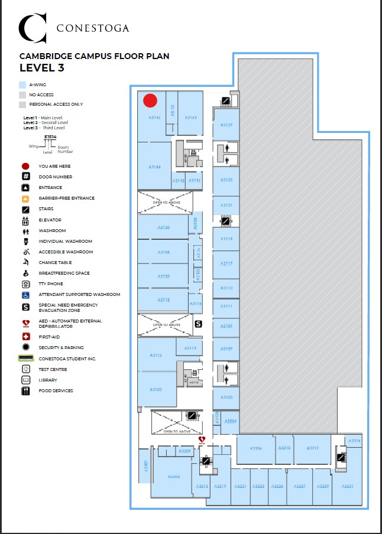

Project 6 - About
Welcome to the about page for Project 6
Our Project utilizes a CAN Bus Network to control a Elevator using a Raspberry Pi to connect as a Server
Here is the Elevator GUI.
In future releases, log in will be required to access the GUI and the GUI designed will be used to control the ELevator
Currently, the basic GUI on the Elevator is sued for basic control
Cambridge Campus Floor 3 Map

Conestoga College ReferenceFor more details, please visit our Project Details page